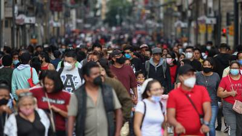
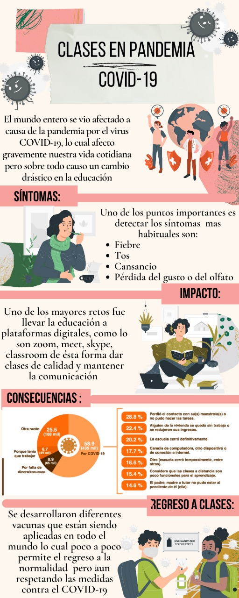

____________________________________________________________________________________________________________________________________________
Los sistemas de educación y formación de todo el mundo y de toda la Unión se han visto afectados y presionados como nunca antes por la pandemia de COVID-19, que ha cambiado de manera trascendental la forma en la que aprendemos, tanto como en un porcentaje de alumnos que se ven afectados por que no tienen los recursos adecuados para tomar sus clases en línea, pero tampoco pueden asistir por el riesgo de contagio ya que no tienen aún la vacuna.
La educación es una forma de brindar estabilidad y seguridad a la niñez ya que ayuda a implementar una rutina, a utilizar su tiempo de forma productiva y así afrontar el trauma, el estrés y el miedo que pueden estar sintiendo a causa de la pandemia. Por eso es muy importante que los niños, niñas y adolescentes puedan seguir estudiando y aprendiendo desde casa, de lo contrario podría darse el caso que olviden algunas cosas que han aprendido.
La situación actual de la educación en México ha sido un parteaguas para reinventar los modelos educativos del país. El sistema educativo cuenta con 3 métodos probados: tradicional, de telesecundaria y en línea. Si bien, métodos como el de telesecundaria sirvieron para resolver el problema durante esta cuarentena, pues de esa forma están impartiendo las lecciones a los alumnos de educación primaria y secundaria, el problema aún no está resuelto porque el simple hecho de ver la televisión no garantiza que los estudiantes adquieran los conocimientos necesarios.

Asimismo, las clases en línea para nivel medio y superior apenas comienzan a ser aprovechadas. El reto aquí es dotar de las herramientas indispensables a fin de que estudiantes y profesores le saquen el máximo beneficio a la educación a distancia. Por ende, se requieren de aptitudes digitales junto a constantes capacitaciones en torno a plataformas educativas como bibliotecas digitales o salas de chat en comunidad y la preparación óptima de las clases con recursos digitales.Graficas
Un claro ejemplo de los problemas mas grandes para los niños/jovenes que continuan estudiando es el dinero, ya que a causa de la cuarentena muchos padres de familia han perdido su trabajo, negocio, etc. Y por dichas razones muchas familas han perdido un recurso valioso para continuar con la educacion en esta temporada de cuarentena y es los "Servicios de internet", que ha sido la 3ra causa mas grande por la que en todo 2020 niños/jovenes no se han inscrito. Graficas

Referencias:
https://www.unicef.org/mexico/educaci%C3%B3n-en-tiempos-de-covid-19
https://www.cetys.mx/trends/educacion/los-retos-de-la-educacion-en-mexico-ante-una-pandemia/
https://www.inegi.org.mx/investigacion/ecovided/2020/#Tabulados
Autores: Olvera Ceballos Karen Daniela, Sandoval Anguiano Mercedes Mariana, Rivera Moreno Maricruz, Hernandez Flores Leonardo